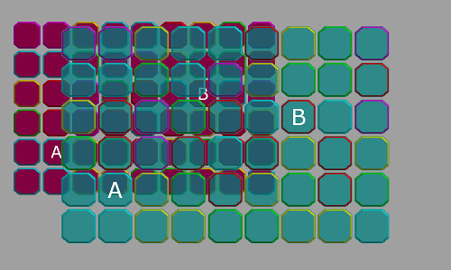

Takaisin
Back
Resolutionary

Havainnekuva Resolutionaryn toiminnasta.
Punaisella on merkitty oikeiden peliobjektien sijainti, sinertävällä sijainti ja koko,
jossa Resolutionary ne piirtää.
Vapaa-ajan projekti
Resolutionary GitHubissa
Resolutionaryn dokumentaatio
Resolutionary on sapluunaprojekti Game Editor -ohjelmalle.
Sen tarkoitus on tehdä peleistä automaattisesti resoluution mukaan skaalautuvia.
Game Editor on vanhahko ohjelma, eikä siinä ole sisäänrakennettua toimintoa pelin skaalaamiseen.
Niinpä Game Editorilla tehdyt pelit ovat "jumissa" siinä resoluutiossa ja
kuvasuhteessa, jossa ne on alun perin kehitetty.
Resolutionary ratkaisee ongelman käyttämällä Game Editorin canvas-objekteja peliobjektien
skaalaamiseen. Järjestelmä ylläpitää listaa niistä objekteista, jotka milloinkin ovat ruudulla,
ja piirtää ne sitten resoluution muutoksen mukaan suhteutettuna oikeaan kohtaan näyttöä
oikeassa koossa.
Resolutionarylla on kattava dokumentaatiosivusto, jossa neuvotaan järjestelmän käyttö
askel askeleelta. Lisäksi sivustolla on luonnollisesti dokumentaatio Resolutionaryn funktioista
ja niiden käytöstä.
Projektissa hyödyntämäni opit
- linkitetyt listat (dynaaminen muistin varaus: malloc, free)
- web-suunnittelu (dokumentaatio toteutettu nettisivuna käyttäen HTML- ja CSS-kuvauskieliä)
Illustration of Resolutionary in work. The actual game objects are marked with red. The
scaled game objects as drawn by Resolutionary are marked with the bluish color.
Hobby project
Resolutionary on GitHub
Resolutionary documentation
Resolutionary is a template project for Game Editor. Its purpose is to make games automatically scale to different resolutions.
Game Editor is and oldish game creation software and as such, it doesn't have built-in support
for making multi-resolution games. This means that games made with Game Editor are effectively
"stuck" in the resolution and aspect ratio they were originally built in.
Resolutionary solves this problem by utilizing Game Editor's canvas objects to scale the game objects.
The system maintains a list of objects currently present on the screen and draws them on the canvas each
frame, scaled and positioned in relation to the change in resolution.
Resolutionary has a comprehensive documentation website with complete instructions on setting up and using
the system, step by step. Naturally, the site also features API documentation of the functions that can
be used to customize the behavior of the system.
Some techniques used in the project
- linked lists (dynamic memory allocation: malloc, free)
- web design (documentation implemented as a website built with HTML and CSS)
{kind=link}